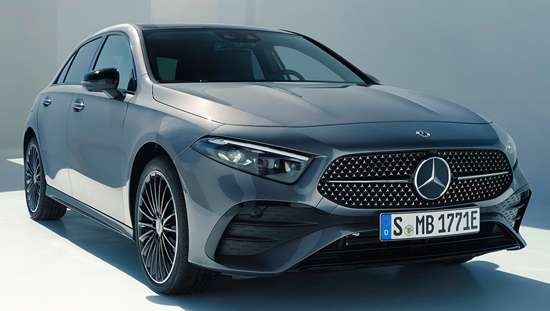
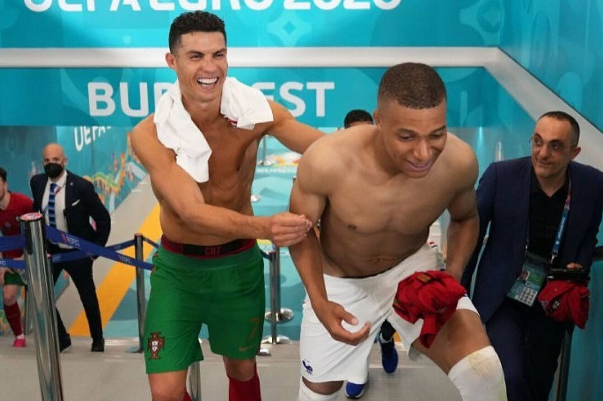

Mercedes-Benz es una empresa alemana fabricante de vehículos, subsidiaria de la compañía Mercedes-Benz Group. La marca es reconocida por sus automóviles de lujo, deportivos, autobuses, camiones, utilitarios y vehículos todoterreno. Su eslogan es: Das Beste oder nichts.Sus más cercanos competidores en el mercado actual de coches de gama alta son: Acura, Alfa Romeo, Audi, DS Automobiles, Volvo, BMW, Lincoln, Cadillac, Cupra, Infiniti, Jaguar, Volkswagen, Lexus, entre otros. La famosa estrella de tres puntas, diseñada por Gottlieb Daimler, simboliza la capacidad de sus motores para emplearlos en tierra, mar y aire.
Mercedes-Benz actualiza el Clase A, aunque a simple vista resulte casi imposible darse cuenta (galería de imágenes del Clase A 2023 y galería de imágenes del Clase A 2018) porque los cambios de diseño son mínimos. Hay mejoras en el equipamiento que, además, es más abundante de serie, y en los motores. a versión más asequible, con carrocería de cinco puertas y un motor de gasolina de 136 CV asociado a un sistema de hibridación ligera, cuesta 38 125 euros. Frente a sus alternativas tradicionales, que son el Audi A3 Sportback y el BMW Serie 1, el Mercedes-Benz es claramente más costoso
"Luché por ello. Luché duro por este sueño", así arrancaba el sincero mensaje de Cristiano Ronaldo tras la eliminación de Portugal ante Marruecos en los cuartos de final del Mundial de Qatar 2022. Con el pitido final, el '7' portugués enfiló en solitario el camino de los vestuarios y en el túnel no pudo evitar romper a llorar mientras le seguían las cámaras. Tras vivir uno de los momentos más difíciles de toda su carrera, Cristiano Ronaldo decidió acudir a sus redes sociales para lanzar un mensaje que terminó dando la vuelta al mundo... y que varias leyendas del deporte no dejaron pasar por alto: Pelé, Lebron James, Mbappé...
Y es que es bastante público la admiración de la estrella francesa hacia Cristiano Ronaldo, al punto de que de niño tenía su habitación tapizada con posters del futbolista portugués. El '10' francés respondió el post con tres emojis para rendir homenaje a su ídolo: el de una corona, el de las manos dando las gracias y el de una cabra, haciendo referencia que es el GOAT (que en inglés significa el 'mejor de todos los tiempos')